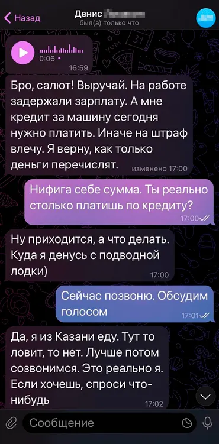
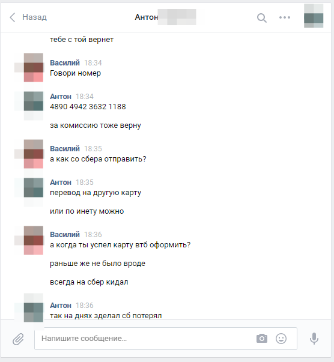

Давний друг
Скорее всего, у каждого в соцсетях есть друг, который давно не был в сети, или же человек, которого вы добавили в друзья для циферки.
А может и вовсе это ваш лучший друг или коллега по работе. Не важно, главное, что он есть у вас в друзьях, и его аккаунт подвергся взлому или утечки данных со стороны компании.
Мошенник может приобрести данный аккаунт на чёрном рынке(dark.net).
Перед тем как написать кому-либо, мошенник обязательно прочитает различные переписки, а так-же прослушает аудио сообщения и поймёт манеру общения владельца аккаунта.
Если вам внезапно написал друг с просьбой помочь ему что-то оплатить или взять взаймы на время, то созвонитесь с ним по номеру телефона, так как созвон в соцсети может быть так-же частью плана мошенника, а мошенник может использовать программу или нейросеть для изминения голоса.
 
Убедились, что это точно ваш друг, и вы хотите ему помочь. Смело можете отправлять ему деньги.
Данный способ мошенничества может практикаваться не только в соцсетях, но и в месенджерах. Если ваш друг по неосторожности подвергся кибератаке.